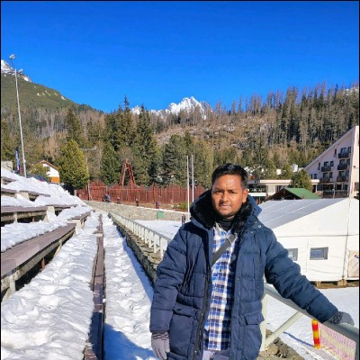

Ion mobility spectrometry · Atmospheric discharges · Air quality · Sustainable infrastructure. I combine plasma physics and environmental engineering to develop advanced sensors for healthier indoor and urban environments, aligned with SDG 3 & 11.

I am a dedicated PhD researcher in Plasma Physics at Comenius University in Bratislava, holding an M.Tech in Infrastructure Engineering (Environmental Engineering) from IIT Jodhpur. My work merges experimental plasma physics with environmental monitoring — currently building an advanced ion mobility spectrometer for VOC detection in indoor environments. Previously I've worked on carbonaceous aerosols (EC/OC) over semi-arid regions and contributed to EIA reports for infrastructure projects.
My interdisciplinary background allows me to approach air pollution, green building performance, and low-carbon development from a unique perspective. I regularly collaborate with atmospheric physics groups and material scientists.
Advancing plasma-based sensing, air quality, and sustainable engineering.
Development of IMS-oaTOF and drift tube instruments for VOC detection, electron swarm parameters.
Laboratory of Plasma Physics →Corona discharge physics, ionization sources for mobility spectrometers, plasma chemistry.
PM2.5 carbonaceous species, spatio-temporal variability, indoor VOCs, green building interventions.
Aerosol Research Group IITJ →Low-carbon development, life cycle assessment (LCA), green building performance and material footprint.
ML for soil CBR prediction, air quality forecasting, and contamination source apportionment.
Environmental impact assessment, sustainable infrastructure, and circular economy strategies.
Sharing insights at the intersection of plasma physics, environmental monitoring, and sustainable infrastructure. Selected presentations from conferences, university seminars, and public lectures.
Invited talk on drift tube IMS design, electron attachment studies, and real-time air quality applications.
Department Seminar on Temperature-Dependent Detection of Ketones in Ion Mobility Spectrometry with Corona Discharge Ionization
Practical workshop on applying ML for soil CBR prediction and air quality modeling (hands-on session).
Panel discussion on integrating LCA, EIA reports, and low-carbon development strategies.
Indoor air quality is a critical factor in occupant health,safety and building performance, making it a key concern in civil engineering and sustainable construction. Volatile organic compounds (VOCs), particularly ketones such as 2-hexanone, 3-hexanone, 2-heptanone, and 3-heptanone, are commonly emitted from building materials and finishing products. This study applies Ion Mobility Spectrometry (IMS) with corona discharge ionization (CDI) operated in positive mode for the rapid detection of these ketones. Vapors were generated from the headspace of a small, sealed bottle, diluted into a 1000 mL container, and introduced into the IMS using a syringe pump at a controlled flow rate of 100 mL·min⁻¹ with air as the carrier gas. The IMS operated under the following conditions: drift tube length 11.93 cm, electric field intensity 670.6 V·cm⁻¹, pressure 621 mbar, temperature 378 K, drift gas flow 600 mL·min⁻¹, and shutter grid frequency 16 Hz. Detection limits were below 50 ppb, demonstrating IMS capability for trace-level monitoring. Compared to chromatographic methods, IMS offers high sensitivity, sub-second response, and minimal sample preparation. These findings support IMS integration into smart building systems for real-time air quality assessment.
For future speaking engagements or invited seminars, please reach out via the contact page.
Ion mobility spectrometry for VOC detection, building advanced IMS drift tube, supervised by Prof. Štefan Matejčík.
Environmental Impact Assessment reports for industrial corridors, greenfield projects and infrastructure compliance.
Thesis: Spatio-temporal variability of PM2.5 carbonaceous aerosols (EC, OC, SOC) over Rajasthan.
Project: Classification of soil in Uttar Pradesh – Geotechnical characterization.
Interested in collaboration, ion mobility systems, air quality research, or joint PhD supervision? Write to me.
kumar18@uniba.sk
Faculty of Mathematics, Physics & Informatics, Comenius University, Mlynská dolina, 84248 Bratislava, Slovakia
+421 2 602 95 311